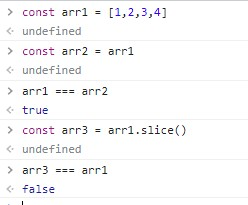

Либо можно еще вот так:
let arr = [];
Пример объявления массива, элементами которого являются объекты:
arr[индекс_ячейки] = 2;
arr.length
Никогда элемент массива не может иметь индекс равный или больший чем значение длины массива. Если свойству length присвоит меньшее значение, то из массива будут удалены все элементы у которых индекс был равен или больше нового значения length. По сути length это индекс последнего элемента + 1
Если присвоить свойству length значение - 0, то у массива удалятся все элементы.
Если свойству length присвоить большее значение, то это приведет к разреженности массива (появятся элементы с пустым значением).
С помощью конструктора Array можно быстро создавать пустые массивы
Короче тоже самое можно записать так
Синтаксис
array.push( elem1, elem2, ... )
elem1, elem2, ... - Эти элементы будут добавлены в конец массива
Пример:
Этот метод удаляет последний элемент
Этот метод удаляет первый элемент, сдвигая очередь, так что второй элемент становится первым
Этот метод добавляет элемент в самое начало массива
Это метод сортирует данные в массиве
Пример
Этот метод возвращает фрагмент или подмассив указанного массива. Два аргумента метода определяют начало и конец возвращаемого фрагмента. Возвращаемый массив содержит элемент , номер которого указан в первом аргументе , плюс все последующие элементы вплоть (но не включая) элемента, номер которого указан во второ маргументе.
Пример
Примечательно то, что если вызвать метод slice без аргументв он вернет поверхностную копию массива
Обыкновенный цикл перебора элементов массива
Цикл создает переменную и на каждой итерации цикла в эту переменную помещает значение элемента массива. Этот цикл появился в ES6 синтаксисе и поэтому может не поддерживаться в некоторых браузерах

Этот метод работает так же как и у объектов. На каждой итерации переменной присваивается ключ элемента (индекс)
Метод forEach так же перебирает массив
Пример
Метод forEach принимает в себя функцию, у которой три входных параметра (называть эти параметры можно произвольно):
Параметры index и pArr используют крайне редко, поэтому метод можно записать и так:
В ES6 синтаксисе появились стрелочные функции, с ними forEach выглядит вот так:
Он вызывает функцию для каждого элемента массива и возвращает массив результатов выполнения этой функции. Иными словами, метод map позволяет модифицировать массив и результат записать в новый массив
пример
На ES5 синтаксисе это бы выглядело так
как возвращать объекты?
Этот метод служит для фильтрации по каком-либо условию исходный массив. Результат так же помещается в переменную
пример
В новый массив newPerson записались только те объекты, у которых свойство age больше либо равно 18
На ES5 синтаксисе это бы выглядело так
Этот метод используется для вычисления какого-нибудь значения на основе всего массива. Этот метод возвращает значение типа INTEGER
Синтаксис
Допустим нам надо посчитать сумму бюджета всех элементов массива. Выглядеть это будет так:
Этот метод позволяет осуществлять поиск по массиву. Результат поиска мы записываем в переменную
пример
На ES5 синтаксисе это бы выглядело так
Этот метод работает точно так же как и метод find, с той лишь только разницей, что он возвращает не элемент массива, а его индекс
На ES5 синтаксисе это бы выглядело так
Этот метод создает новый массив, в который копирует данные из другого массива и дополнительные значения
split преобразует строку в массив. Пример:
Входным параметром метода split является делитель, в нашем случае это запятая. Этот символ определяет границы значения элемента массива
join делает обратное. Он массив переводит в строку:
d качестве входного параметра методу join мы указали разделитель между словами в строке. Таким образом переведя сначала в массив, а затем обратно в строку мы избавились от запятых
Метод every() возвращает либо true либо false. Он имеет указанную функцию-предикат, которую применяет ко всем элементам массива. Обычно это условие. Если все элементы массива отвечают этому условию, то метод вернет true, если хотя бы один элемент не будет соответствовать условию, метод вернет false
Метод some() похож на метод every() по синтаксису, но отличается тем что возвращает true если хотя бы один элемент массива отвечает условию
определяет, содержит ли массив определённый элемент, возвращая в зависимости от этого true или false.
Метод splice удаляет из массива элемент индекс которого указан в качестве первого аргумента метода, так же удаляет то количество элементов массива, которое указано вторым агрументом начиная отсчет с того элемента который был указан в первом аргументе и на их место поместит элементы которые были переданы в качестве отсальных аргументов.